Field Monitoring — Water Infrastructure
Spot-checks and cross-checks carried out during routine and commissioned M&E assignments.

Cross-checking water tank measurements on behalf of our client
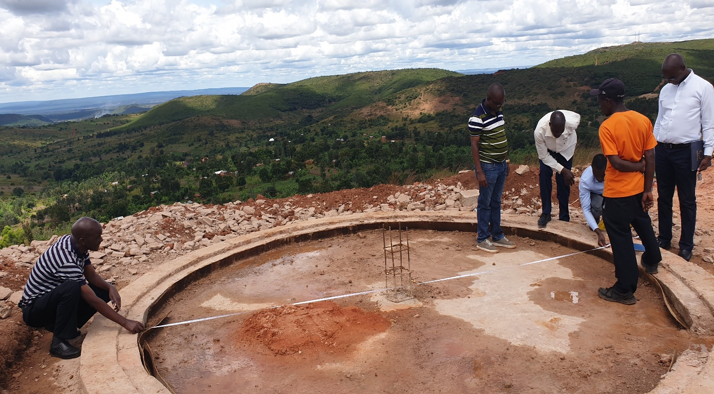
Team cross-check of water tank measurements before handover
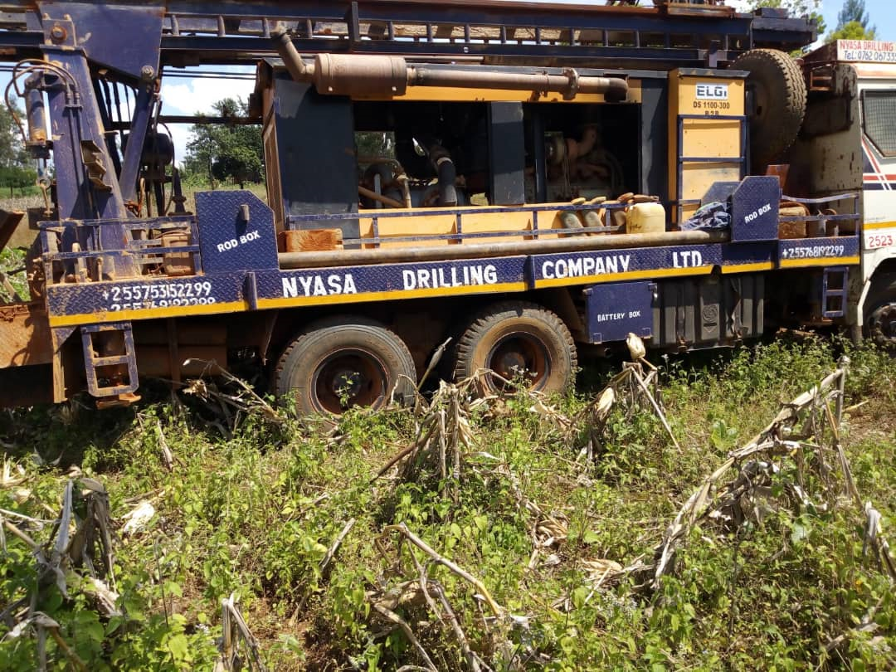
Drilling rig mobilized for a borehole assignment
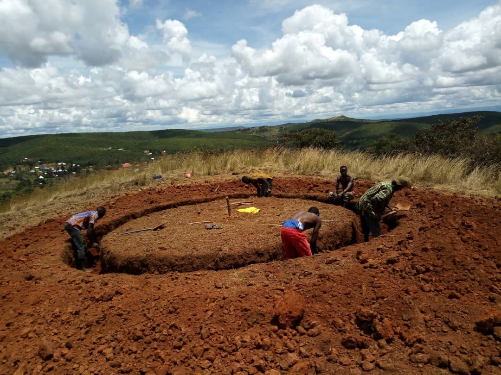
Trenching for a water tank foundation

Water tank basement construction, spot-checked on site
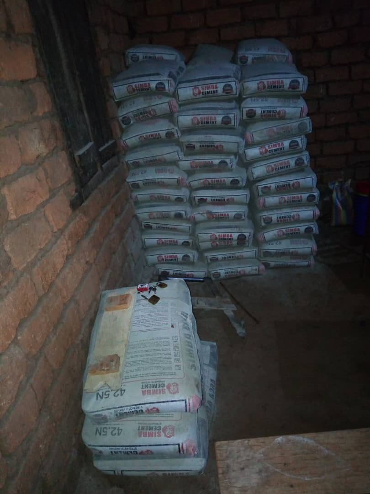
Cross-check of material mobilization
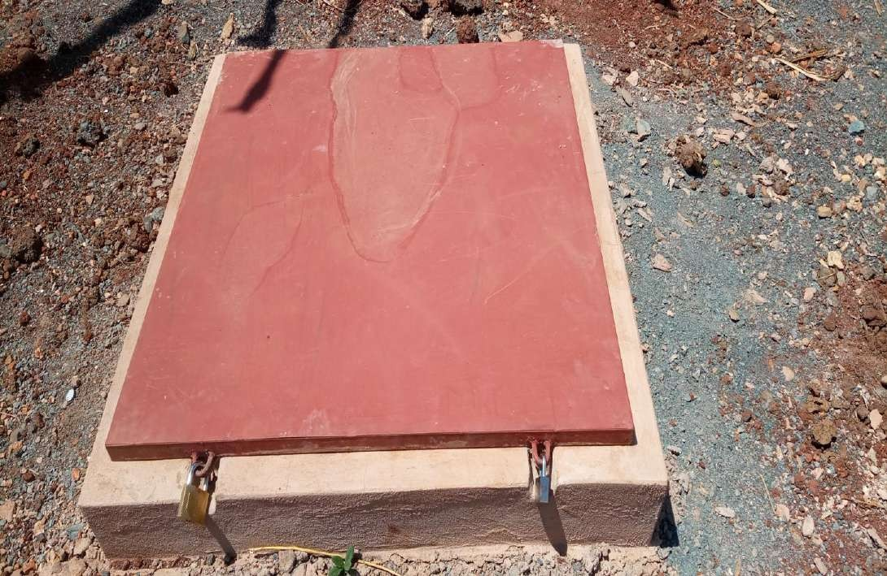
Drilled well fitted with a locked protective cover
Consultation, Training & Operations
Community engagement, capacity-building sessions, and the reporting work behind every assignment.

Community consultation during a field evaluation
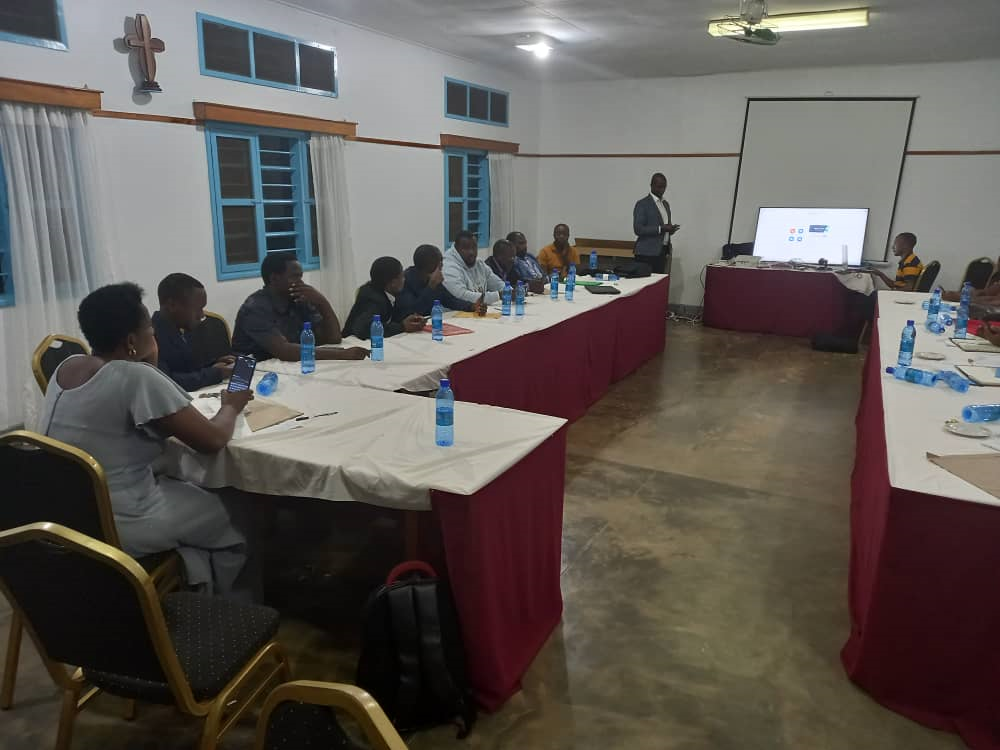
Capacity-building session with institutional staff
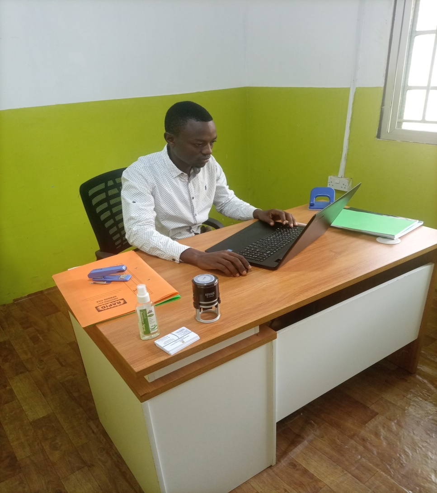
Documentation and reporting behind every field result
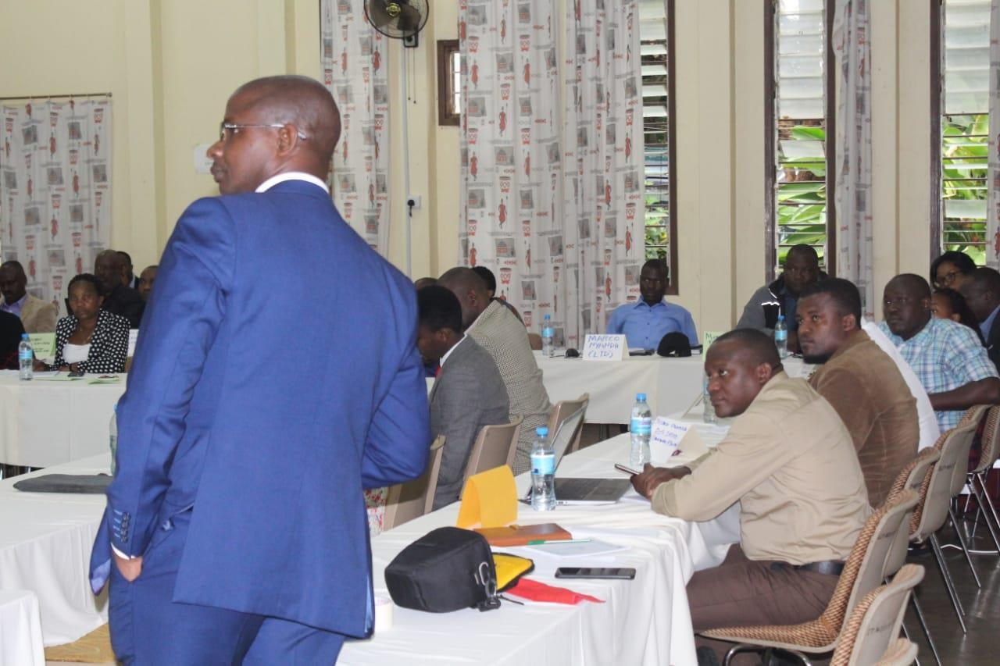
Briefing participants during a capacity-building session
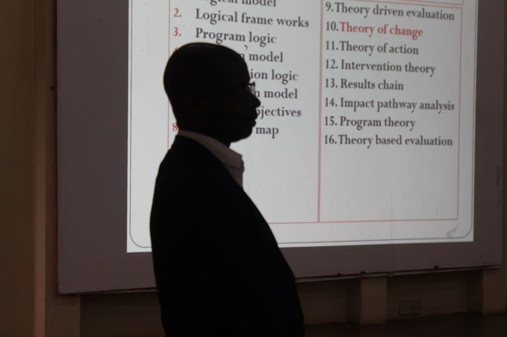
Presenting M&E theory and logical frameworks
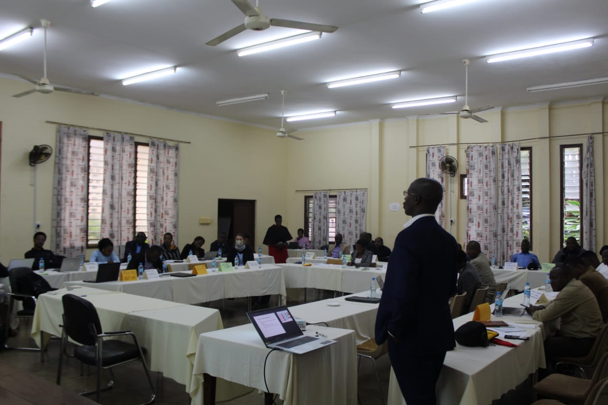
Capacity-building session at a partner venue
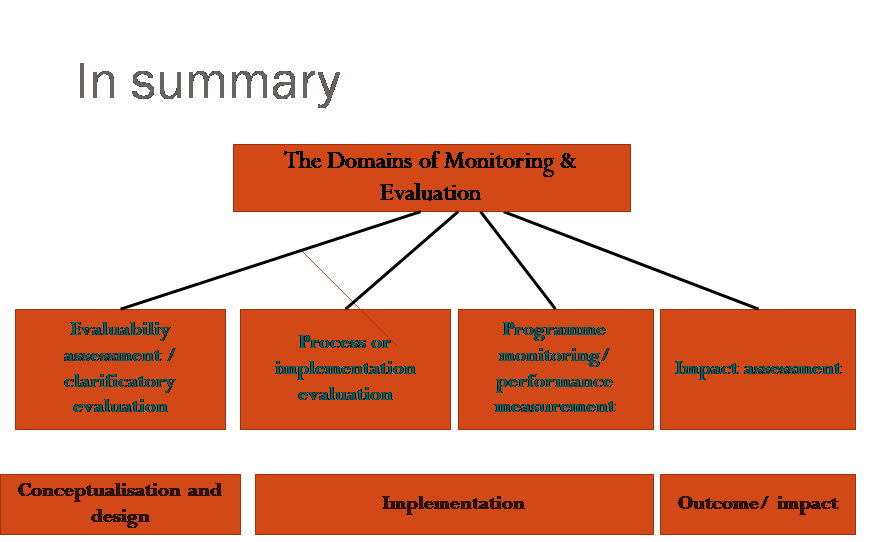
The Domains of Monitoring & Evaluation
Case Study — School WASH & Menstrual Hygiene Evaluation
A process evaluation of WASH and menstrual-hygiene-management activities at a partner school.
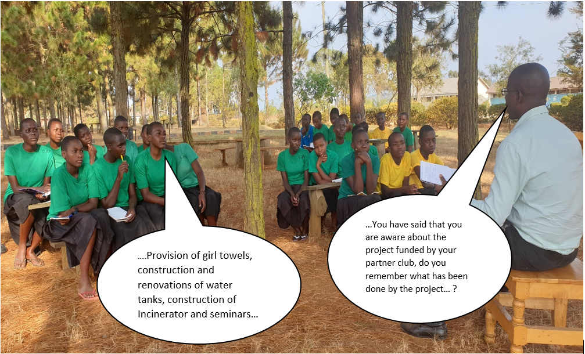
Interviewing students on project activities at their school
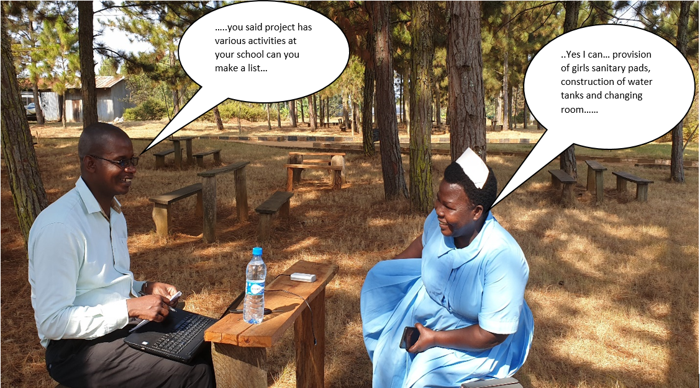
Interview with school staff on WASH activities delivered

Students using the new changing rooms — “no stigma again”
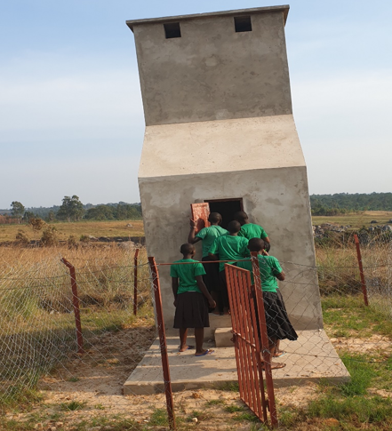
Incinerator constructed under the project
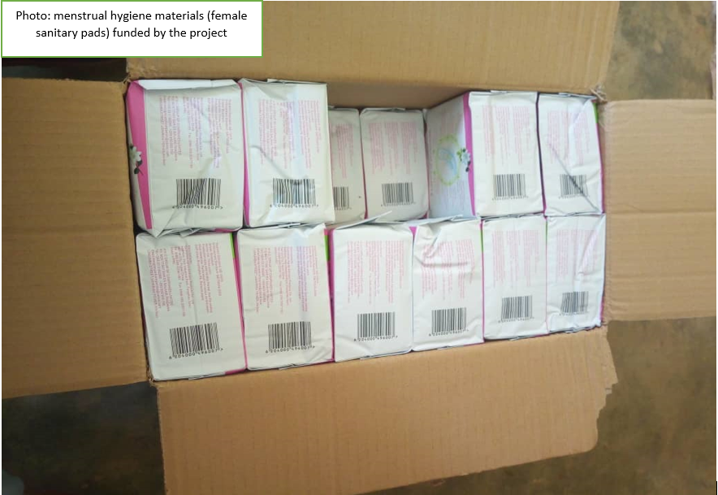
Menstrual hygiene materials funded by the project

Completed water tank — a verified project result